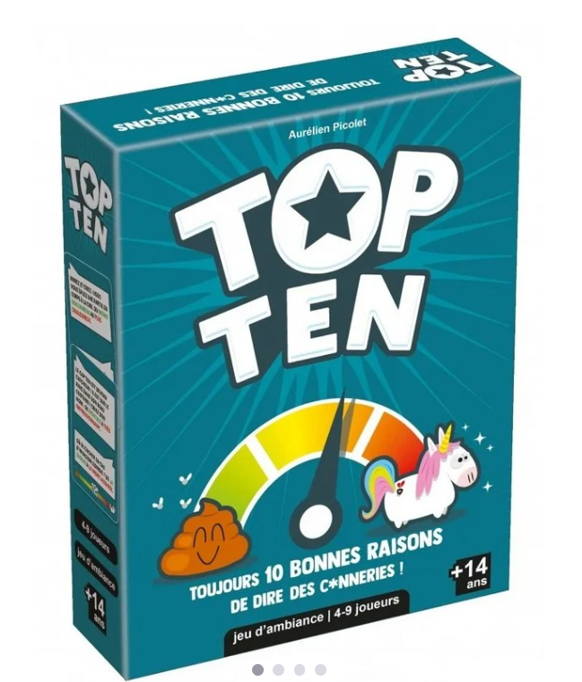
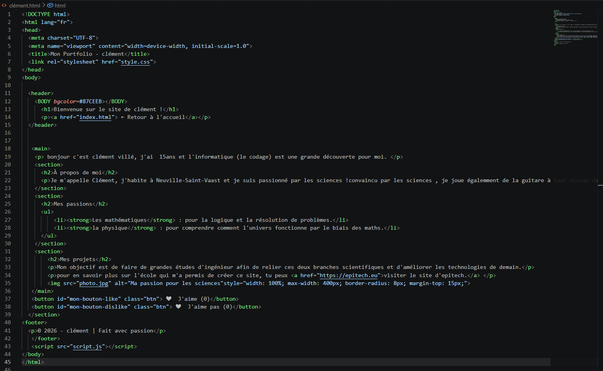
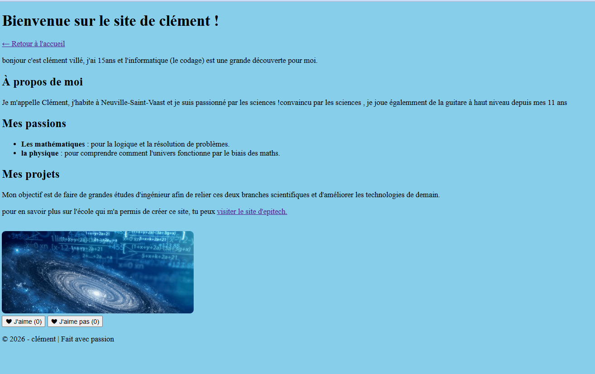

Bonjour à tous,on espère que tout le monde va bien, vous allez sur plusieurs jours découvrir ce que les stagiaire de seconde ont fait au cours de ce stage de 2 semaines à EPITECH , un établissement d'enseignement supérieur privé, reconnu par l'Etat, spécialisé en informatique.
On remerci fortement épitech pouur cet accueil chaleureux de qualité.
Le matin de 10:00 à 11:15
Tous sommes arrivés à EPITECH dans les salles puis nous avons fait un jeu qui nous a permis de faire conaissances entre nous afin de tisser des liens et de nous organiser en groupe de tablée.

Le matin de 11:15 à 12:30
Pour préparer ces deux longues semaines,il fallait tout d'abord s'assurer que tout le monde ait installé Node, vs code.... des applications nécessaire pour les activités de codage qui nous attendaient.
Le midi, vers 12:30
comme tous les jours, nous avons bénéficié d'une pause déjeuner de 12:30 à 13h30 pour se détendre avant les activités de l'après-midi qui étaient assez longues et demandaient de gros efforts d'attention et de réflexion.
L'après-midi
De 13:30 à 17:00, les étudiant d'epitech nous ont introduit la façon dont nous devons réaliser notre portefolio et nous ont donné un guide en pdf avec quelques lignes de code pour débuter notre portefolio. C'étaient pour certains d'entre nous simple et pour d'autre un peu plus complexe car tous ne venaient pas en sachant deja coder mais en découvrant car cela reste un stage de découverte .

Mon code dans VS Code

Rendu de mon portfolio
Pour en savoir plus sur l'école qui nous a permis de créer ces portofolios, tu peux visiter le site d'epitech
👍 👍 👍